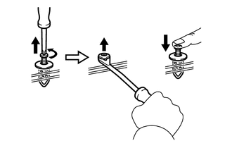

INTRODUCTION REPAIR INSTRUCTION PRECAUTION
BASIC REPAIR HINT
HINTS ON OPERATIONS
| 1 | Attire | ·
Always wear a clean uniform. ·
A hat and safety shoes must be worn. |
| 2 | Vehicle protection | Prepare a grille cover, fender cover, seat cover and floor mat before starting work. |
| 3 | Safety procedures | ·
When working with 2 or more persons, be sure to check the safety of one another. ·
When working with the engine running, make sure to provide ventilation for exhaust fumes in the workshop. ·
If working on high temperature, high pressure, rotating, moving or vibrating parts, wear appropriate safety equipment and take extra care not to injure yourself or others. ·
When jacking up the vehicle, be sure to support the specified locations with safety stands. ·
When lifting up the vehicle, use appropriate safety equipment. |
| 4 | Preparation of tools and measuring equipment | Before starting work, prepare a tool stand, SST, measuring equipment, oil, and any replacement parts required. |
| 5 | Removal and installation, disassembly and assembly operations | ·
Diagnose with a thorough understanding of proper procedures and of the reported problem. ·
Before removing any parts, check the general condition of the assembly and for deformation and damage. ·
If the procedure is complicated, take notes. For example, note the total number of electrical connections, bolts or hoses removed. Add matchmarks to ensure reassembly of components in the original positions. Temporarily mark hoses and their fittings if needed. ·
Clean and wash the removed parts if necessary and assemble them after a thorough check. |
| 6 | Removed parts | ·
Place the removed parts in a separate box to avoid mixing them up with new parts or contaminating the new parts. ·
For non-reusable parts such as gaskets, O-rings and self-locking nuts, replace them with new ones as instructed in this manual. ·
Retain the removed parts for customer inspection, if requested. |
| 7* | Checks to perform after work is finished | ·
Make sure that removed and installed parts (oil filler cap, level dipstick, floor mat, etc.) are properly installed/tightened. ·
Make sure that none of the cloths or tools that were used have been left in the engine compartment or within the vehicle. ·
Check that there are no oil leaks. |
- CAUTION:
-
*: Be sure to perform these checks properly, not performing these checks properly after finishing work can lead to serious accident or injury.
JACKING UP AND SUPPORTING THE VEHICLE
Care must be taken when jacking up and supporting the vehicle. Be sure to lift and support the vehicle at the proper locations.
| *a | Seal Lock Adhesive |
PRECOATED PARTS
Precoated parts are bolts and nuts that are coated with seal lock adhesive at the factory.
If a precoated part is retightened, loosened or moved in any way, it must be recoated with the specified adhesive.
When reusing a precoated part, clean off the old adhesive and dry the part with compressed air. Then apply new seal lock adhesive appropriately to that part.
Some seal lock agents harden slowly. You may have to wait for the seal lock adhesive to harden.
GASKETS
When necessary, use a sealer on gaskets to prevent leaks.
BOLTS, NUTS AND SCREWS
Carefully follow all the specifications for tightening torque. Always use a torque wrench.
Make sure that no foreign matter (burrs, paint, etc.) gets trapped under the heads of the bolts and nuts when tightening them.
| *a | INCORRECT |
| *b | CORRECT |
FUSES
When inspecting a fuse, check that the wire of the fuse is not broken.
If the wire of a fuse is broken, confirm that there are no shorts in its circuit.
When a fuse is replaced, a fuse with the same amperage rating must be used.
| Illustration | Symbol | Part Name | Abbreviation |
|---|---|---|---|

|
FUSE | FUSE | |

|
MEDIUM CURRENT FUSE | M-FUSE | |

|

|
HIGH CURRENT FUSE | H-FUSE |

|

|
FUSIBLE LINK | FL |

|

|
CIRCUIT BREAKER | CB |

|
|
FUSIBLE LINK | FL |
CLIPS
The removal and installation methods of typical clips used for vehicle body parts are shown in the table below.
- HINT:
-
If clips are damaged during a procedure, always replace the damaged clips with new ones.
| Shape (Example) | Removal/Installation |
|---|---|

|
Remove the clips with a clip remover or pliers.
|
| Remove the clips using a clip remover or a screwdriver with its tip wrapped with protective tape.
|
|
Remove the clips with a wide scraper to prevent panel damage.

|
|
Remove the clips by pushing the center pin through and prying out the shell.

|
|

|
Remove the clips by unscrewing the center pin and prying out the shell.

|
Remove the clips by prying out the pin using a screwdriver with its tip wrapped with protective tape and then prying out the shell.

|
CLAWS
The removal and installation methods of typical claws used for vehicle body parts are shown in the table below.
- HINT:
-
If claws are damaged during a procedure, always replace the cap or cover that has damaged claws with a new one.
| Shape (Example) | Illustration / Procedures |
|---|---|

|
Disengage the claws using a screwdriver with its tip wrapped with protective tape to remove the caps or covers.
|
| Disengage the claws using a screwdriver with its tip wrapped with protective tape to remove the caps or covers.
|
|

|
Disengage the claws using a screwdriver with its tip wrapped with protective tape to remove the caps or covers.

|
HINGES, GUIDES, CLAMPS, PINS, ETC.
The removal and installation methods of typical hinges, guides, clamps and pins used for vehicle body parts are shown in the table below.
- HINT:
-
If clamps are damaged during a procedure, always replace the cap or cover that has damaged clamps with a new one.
| Shape (Example) | Removal/Installation |
|---|---|

|
Pull away from the pins to disengage.
|

|
Disengage the pins by pulling.
|

|
Remove the clamps with pliers.

|

|
Disengage the pins by pulling.

|
REMOVAL AND INSTALLATION OF VACUUM HOSES

| *a | INCORRECT |
| *b | CORRECT |
To disconnect a vacuum hose, pull and twist it from the end of the hose. Do not pull it from the middle of the hose as this may damage the hose.
When disconnecting vacuum hoses, use tags to identify where they should be reconnected.
After completing any hose related repairs, double-check that the vacuum hoses are properly connected. The label under the hood shows the proper layout.
When using a vacuum gauge, never force the hose onto a connector that is too large. If a hose has been stretched, air may leak. Use a step-down adapter if necessary.

TORQUE WHEN USING TORQUE WRENCH WITH EXTENSION TOOL
Use the formula below to calculate special torque values for situations where SST or an extension tool is combined with a torque wrench.
- Formula:
T' = (L2/(L1 + L2))*T
| T' | Reading of torque wrench (N*m (kgf*cm, ft.*lbf)) |
| T | Torque (N*m (kgf*cm, ft.*lbf)) |
| L1 | Length of SST or extension tool (cm (in.)) |
| L2 | Length of torque wrench (cm (in.)) |
- NOTICE:
-
If an extension tool or SST is combined with a torque wrench and used to tighten to a torque specification in this manual, the actual torque will be excessive and parts will be damaged.
FOR VEHICLES EQUIPPED WITH SRS AIRBAG AND SEAT BELT PRETENSIONER
This vehicle is equipped with a Supplemental Restraint System (SRS).
- CAUTION:
- ·
Before performing pre-disposal deployment of any SRS parts, review and closely follow all applicable environmental and hazardous material regulations. Pre-disposal deployment may be considered hazardous material treatment.
·Failure to carry out the service operations in the correct sequence could cause the SRS to unexpectedly deploy during servicing and lead to a serious injury. Furthermore, if a mistake is made when servicing the SRS, it is possible that the SRS may fail to operate properly. Before servicing (including removal or installation of parts, inspection or replacement), be sure to read the following section carefully.
GENERAL NOTICE
As malfunctions of the SRS are difficult to confirm, Diagnostic Trouble Codes (DTCs) become the most important source of information when troubleshooting. When troubleshooting the SRS, always check for DTCs before disconnecting the battery.
Work must be started at least 90 seconds after the ignition switch is turned off and the cable is disconnected from the negative (-) battery terminal.
The SRS is equipped with a back-up power source. If work is started within 90 seconds of turning the ignition switch off and disconnecting the cable from the negative (-) battery terminal, the SRS may deploy.
When the cable is disconnected from the negative (-) battery terminal, the clock and audio system memory will be cleared. Before starting work, make a note of the settings of each memory system. When work is finished, reset the clock and audio system as before.
- CAUTION:
-
Never use a back-up power source (battery or other) to avoid clearing the system memory. The back-up power source may inadvertently power the SRS and cause it to deploy.
If the vehicle has been involved in a minor collision where the SRS does not deploy, the steering pad, front passenger airbag assembly, knee airbag assembly, seat side airbag assemblies, curtain shield airbag assemblies and seat outer belt assemblies should be inspected before further use of the vehicle.
Never use SRS parts from another vehicle. When replacing parts, use new ones.
Before performing repairs, remove the airbag sensor assemblies if impacts are likely to be applied to the sensor during repairs.
Never disassemble and attempt to repair any of the airbag sensor assemblies or airbag assemblies.
Steering pad
Front passenger airbag assembly
Knee airbag assembly
Curtain shield airbag assembly
Seat outer belt assembly
Replace any airbag sensor assembly or SRS parts if: 1) damage has occurred from being dropped, or 2) cracks, dents or other defects in the case, bracket or connector are present.
Do not directly expose the airbag sensor assemblies or SRS parts to hot air or flames.
Use a voltmeter/ohmmeter with high impedance (minimum = 10 kΩ) for troubleshooting electrical circuits.
Information labels are attached to the SRS components. Follow the instructions on the labels.
After work on the SRS is completed, check the SRS warning light.
SPIRAL CABLE
As malfunctions of the SRS are difficult to confirm, Diagnostic Trouble Codes (DTCs) become the most important source of information when troubleshooting. When troubleshooting the SRS, always check for DTCs before disconnecting the battery.
STEERING PAD
Always place a removed or new steering pad with the deployment surface facing upward. Placing the steering pad with the deployment surface facing downward could cause a serious accident if the airbag deploys. Also, do not place anything on top of the steering pad.
Never measure the resistance of the airbag squib. This may cause the airbag to deploy, which could cause serious injury.
Grease or detergents of any kind should not be applied to the steering pad.
Store the steering pad in an area where the ambient temperature is below 93°C (199°F), the humidity is not high and there is no electrical noise.
Before using an electric welder anywhere on the vehicle, disconnect the center airbag sensor assembly connectors. These connectors contain shorting springs. This feature reduces the possibility of the airbag deploying due to current entering the squib wiring.
When disposing of the vehicle or steering pad by itself, the airbag should be deployed using SST before disposal. Deploy the airbag in a safe place away from electrical noise.
FRONT PASSENGER AIRBAG ASSEMBLY
Always place a removed or new front passenger airbag assembly with the deployment surface facing upward. Placing the airbag assembly with the airbag deployment surface facing downward could cause a serious accident if the airbag deploys.
Never measure the resistance of the airbag squib. This may cause the airbag to deploy, which could cause serious injury.
Grease or detergents of any kind should not be applied to the front passenger airbag assembly.
Store the front passenger airbag assembly in an area where the ambient temperature is below 93°C (199°F), the humidity is not high and there is no electrical noise.
Before using an electric welder anywhere on the vehicle, disconnect the center airbag sensor assembly connectors. These connectors contain shorting springs. This feature reduces the possibility of the airbag deploying due to current entering the squib wiring.
When disposing of the vehicle or front passenger airbag assembly by itself, the airbag should be deployed using SST before disposal. Deploy the airbag in a safe place away from electrical noise.
KNEE AIRBAG ASSEMBLY
Always place a removed or new knee airbag assembly with the airbag deployment surface facing upward. Placing the airbag assembly with the airbag deployment surface facing downward could cause a serious accident if the airbag deploys.
Never measure the resistance of the airbag squib. This may cause the airbag to deploy, which could cause serious injury.
Grease or detergents of any kind should not be applied to the knee airbag assembly.
Store the knee airbag assembly in an area where the ambient temperature is below 93°C (199°F), the humidity is not high and there is no electrical noise.
Before using an electric welder anywhere on the vehicle, disconnect the center airbag sensor assembly connectors. These connectors contain shorting springs. This feature reduces the possibility of the airbag deploying due to current entering the squib wiring.
When disposing of the vehicle or a knee airbag assembly by itself, the airbag should be deployed using SST before disposal. Deploy the airbag in a safe place away from electrical noise.
CURTAIN SHIELD AIRBAG ASSEMBLY
Always place a removed or new curtain shield airbag assembly in a clear plastic bag, and keep it in a safe place.
- CAUTION:
-
The plastic bag should be disposed of after use.
- NOTICE:
-
Never disassemble a curtain shield airbag assembly.
Never measure the resistance of the airbag squib. This may cause the airbag to deploy, which could cause serious injury.
Grease or detergents of any kind should not be applied to the curtain shield airbag assembly.
Store the curtain shield airbag assembly in an area where the ambient temperature is below 93°C (199°F), the humidity is not high and there is no electrical noise.
Before using an electric welder anywhere on the vehicle, disconnect the center airbag sensor assembly connectors. These connectors contain shorting springs. This feature reduces the possibility of the airbag deploying due to current entering the squib wiring.
When disposing of the vehicle or a curtain shield airbag assembly by itself, the airbag should be deployed using SST before disposal. Deploy the airbag in a safe place away from electrical noise.
SEAT OUTER BELT ASSEMBLY (SEAT BELT PRETENSIONER)
Never measure the resistance of the seat outer belt assembly. This may cause the pretensioner of the seat outer belt assembly to deploy, which could cause serious injury.
Never disassemble the seat outer belt assembly.
Never install the seat outer belt assembly on another vehicle.
Store the seat outer belt assembly in an area where the ambient temperature is below 80°C (176°F), the humidity is not high and there is no electrical noise.
Before using an electric welder anywhere on the vehicle, disconnect the center airbag sensor assembly connectors. These connectors contain shorting springs. This feature reduces the possibility of the airbag deploying due to current entering the squib wiring.
When disposing of the vehicle or a seat outer belt assembly by itself, the seat outer belt assembly should be deployed before disposal. Deploy the seat outer belt assembly in a safe place away from electrical noise.
for Single Cab: Click hereVehicle Interior>SEAT BELT>FRONT SEAT OUTER BELT ASSEMBLY(for Single Cab)>DISPOSAL201608,999999,_58,_029931,_0142807,RM100000001082P,
As the seat outer belt assembly is hot after being deployed, allow some time for it to cool down sufficiently before disposal. Never apply water to cool down the seat outer belt assembly.
Grease, detergents, oil or water should not be applied to the seat outer belt assembly.
CENTER AIRBAG SENSOR ASSEMBLY
Never reuse a center airbag sensor assembly that has been involved in a collision where the SRS has deployed.
The connectors to the center airbag sensor assembly should be connected or disconnected with the sensor installed to the vehicle. If the connectors are connected or disconnected while the center airbag sensor assembly is not installed, the SRS may be activated.
Work must be started at least 90 seconds after the ignition switch is turned off and the cable is disconnected from the negative (-) battery terminal, even if only loosening the bolts of the center airbag sensor assembly.
WIRE HARNESS AND CONNECTOR
The SRS wire harness is integrated with the instrument panel wire harness assembly. All the connectors in the system are yellow. If the SRS wire harness becomes disconnected or a connector becomes broken, repair or replace it.
ELECTRONIC CONTROL
| *1 | Cable |
| *2 | Negative (-) Battery Terminal |
- NOTICE:
-
Certain systems need to be initialized after disconnecting and reconnecting the cable to the negative (-) battery terminal.
DISCONNECTING AND RECONNECTING NEGATIVE BATTERY CABLE
Before performing work on electronic components, disconnect the cable to the negative (-) battery terminal to prevent damage to the electrical system or components.
When disconnecting the cable, turn the ignition switch and headlight switch off and loosen the cable nut completely. Perform these operations without twisting or prying the cable. Then disconnect the cable.
Clock settings, radio settings, audio system memory, DTCs and other data will be cleared when the cable is disconnected from the negative (-) battery terminal. Write down any necessary data before disconnecting the cable.
| *a | INCORRECT |
HANDLING OF ELECTRONIC PARTS
Do not open the cover or case of the ECU unless absolutely necessary. If the IC terminals are touched, the IC may be rendered inoperative by static electricity.
Do not pull on the wires when disconnecting electronic connectors. Pull on the connector itself.
Do not drop electronic components, such as sensors or relays. If they are dropped on a hard surface, they should be replaced.
When cleaning the engine components with steam, protect the electronic components, air filter and emission-related components from water.
Never use an impact wrench to remove or install temperature switches or temperature sensors.
When measuring the resistance between terminals of a wire connector, insert the tester probe carefully to prevent the terminals from bending.
REMOVAL AND INSTALLATION OF FUEL CONTROL PARTS
PLACE FOR REMOVING AND INSTALLING FUEL SYSTEM PARTS
Work in a location with good air ventilation that does not have welders, grinders, drills, electric motors, stoves, or any other ignition sources nearby.
Never work in a pit or near a pit as fuel vapors will collect there.
REMOVING AND INSTALLING FUEL SYSTEM PARTS
Prepare a fire extinguisher before starting work.
To prevent static electricity, install a ground wire between the fuel changer and vehicle, and do not spray the surrounding area with water. Be careful when performing work in this area, as the floor surface will become slippery. Do not clean up gasoline spills with water, as this may cause the gasoline to spread, and possibly create a fire hazard.
Avoid using electric motors, work lights and other electric equipment that can cause sparks or high temperatures.
Avoid using iron hammers as they may create sparks.
Dispose of fuel-contaminated cloth separately using a fire resistant container.
REMOVAL AND INSTALLATION OF ENGINE INTAKE PARTS

If any metal particles enter intake system parts, they may damage the engine.
When removing and installing intake system parts, cover the openings of the removed parts and engine openings. Use adhesive tape or other suitable materials.
When installing intake system parts, check that no metal particles have entered the engine or installed parts.
HANDLING OF HOSE CLAMPS
| *1 | Clamp Track |
| *2 | Spring Type Clamp |
Before removing a hose, check the clamp position so that it can be reinstalled in the same position.
Replace any deformed or dented clamps with new ones.
When reusing a hose, attach the clamp on the clamp track portion of the hose.
For a spring type clamp, it may be necessary to spread the tabs slightly after installation by pushing them in the direction of the arrows as shown in the illustration.
FOR VEHICLES EQUIPPED WITH MOBILE COMMUNICATION SYSTEMS
Install the antenna as far away from the ECU and sensors of the vehicle electronic systems as possible.
Install the antenna and feeder at least 20 cm (7.87 in.) away from the ECUs and sensors of the vehicle electronic systems. For details about ECU and sensor locations, refer to the section on the applicable components.
Keep the antenna and feeder separate from other wiring as much as possible. This will prevent signals sent from the communication equipment from affecting vehicle equipment and vice versa.
Check that the antenna and feeder are correctly adjusted.
Do not install a high-powered mobile communication system.
HEADLIGHT INSPECTION OR MAINTENANCE
| *a | Illumination for 3 minutes or more prohibited if covered |
When the headlights are illuminated, do not cover the headlights for 3 minutes or more.
- NOTICE:
-
As the headlight outer lens is made of resin, the resulting heat created when covering the headlight for an extended period of time may deform the headlight.
FOR VEHICLES EQUIPPED WITH TRACTION CONTROL (TRC) AND VEHICLE STABILITY CONTROL (VSC) SYSTEMS
When testing with a drum tester such as a speedometer tester, combination tester for the speedometer and brakes, or chassis dynamometer, or when jacking up the front wheels and turning the wheels, perform the following procedure to enter Inspection Mode and disable the TRC and VSC systems.
- NOTICE:
-
Secure the vehicle with lock chains for safety.
- HINT:
- ·
The vehicle may slip unexpectedly out of the dynamometer because of VSC operations.
·Pressing the VSC OFF switch (for vehicles with a VSC OFF switch) does not disable VSC operation completely.
WHEN TESTING BRAKES, SPEEDOMETER, ETC.
- NOTICE:
-
When testing with a 2-wheel drum tester such as a speedometer tester, a combination speedometer and brake tester, or a chassis dynamometer, enter 2WD mode to turn 4WD operation off.
WHEN USING A SPEEDOMETER TESTER
- NOTICE:
- ·
The inspection should be done using the rear wheels.
·The maximum vehicle speed must be less than 60 km/h (37 mph) (when using free rollers to support the front wheels, the vehicle speed must be less than 50 km/h (31 mph)).
·The driving time should be less than 1 minute.
·Follow all usage and safety procedures in the operator's manual for the speedometer tester.
w/ VSC:
Enter Inspection Mode to disable TRC and VSC control.
Place the rear wheels onto the rollers.
Secure the vehicle with suitable chains or straps.
Start the engine, and then measure the vehicle speed while increasing the speed gradually.
After the test is finished, decrease the speed gradually, and then stop the vehicle.Place the rear wheels onto the rollers.
WHEN USING A BRAKE TESTER
- NOTICE:
- ·
A high-speed type brake tester cannot be used.
·The vehicle speed should be less than 0.5 km/h (0.3 mph).
·Follow all usage and safety procedures in the operator's manual for the brake tester.
w/ VSC:
Enter Inspection Mode to disable TRC and VSC control.
Position the wheels to be tested (front or rear) on the tester.
Move the shift lever to neutral.
Start the engine to allow normal brake booster operation.
Operate the brakes to perform the test.
WHEN USING A CHASSIS DYNAMOMETER
w/ VSC:
Enter Inspection Mode to disable TRC and VSC control.
Place the rear wheels onto the rollers.
Make sure that the vehicle is securely fixed in place.
Secure the vehicle with suitable chains or straps.
- CAUTION:
-
Confirm that the vehicle is securely immobilized.
- NOTICE:
- ·
Do not brake or accelerate suddenly.
·Follow all usage and safety procedures in the operator's manual for the chassis dynamometer.
WHEN USING AN ON-VEHICLE BALANCER
Raise the vehicle until all 4 wheels are off the ground.
Support the vehicle with safety stands at an appropriate height. Make sure that vehicle does not lean in any direction, and that the tires are completely clear of the floor.
Place the vibration pick-up unit into position for the wheel to be measured*1.
Release the parking brake.
Check that no dragging force exists when turning each wheel by hand.
Put the wheel balancer in position.
The wheel balance measurement should be done by using both the engine and the wheel balancer drive roller to spin the wheels.
- CAUTION:
-
Confirm that the vehicle is securely immobilized.
- NOTICE:
- ·
Start the engine and increase the vehicle speed gradually with the shift lever in a position other than neutral or reverse.
·Do not accelerate or decelerate suddenly.
·Deceleration should be done by braking gradually.
·Make sure that no one is standing in front of or behind the spinning wheels.
·The measurement should be done quickly.
·Follow all usage and safety procedures in the operator's manual for the wheel balancer.
- HINT:
-
*1: Different on-vehicle wheel balancers have different requirements for mounting the vibration pick-up unit(s). Refer to the operator's manual for the wheel balancer to confirm requirements for use.
PRECAUTIONS FOR TOWING 4WD VEHICLES
Use one of the following methods to tow the vehicle.
If the vehicle has trouble with the chassis or drivetrain, use method 1 (flatbed truck).
- NOTICE:
-
Do not use any towing method other than those shown above.
If a tow truck is not available, in an emergency the vehicle may be temporarily towed using a cable or chain secured to the emergency towing eyelet(s).
This should only be attempted on hard surfaced roads for distances of less than 80 km, and at speeds below 30 km/h (19 mph).
A driver must be in the vehicle to steer and operate the brakes. The vehicle's wheels, drivetrain, axles, steering and brakes must be in good condition.
- NOTICE:
-
If the towing speed or distance exceeds the above limits, or the vehicle is towed in a backward direction with the wheels on the ground, the drivetrain or vehicle may be damaged.
Emergency towing procedure
Turn the ignition switch to ON.
Depress the brake pedal and move the transmission shift lever to neutral.
Release the parking brake.
Release the brake pedal slowly.
- NOTICE:
- ·
Use extreme caution when towing the vehicle. Avoid sudden starts or erratic driving maneuvers which place excessive stress on the emergency towing eyelet and the cables or chains.
·Do not turn off the ignition switch. Turning off the ignition switch may result in engagement of the steering lock, resulting in a hazardous situation or accident.
The towing methods shown below are dangerous and can damage the vehicle, so do not use them.
Do not tow the vehicle with only 2 wheels on the ground.
- CAUTION:
-
If the vehicle is towed with only the front wheels on the ground, the steering may move, causing the vehicle to become unstable.
- NOTICE:
-
If the vehicle is towed with only the rear wheels on the ground, the drivetrain may overheat and be damaged.
Do not use a sling-type towing method either from the front or rear.
- NOTICE:
-
If a sling-type tow truck is used, damage may occur to the vehicle body.
FOR VEHICLES EQUIPPED WITH CATALYTIC CONVERTER
- CAUTION:
-
If a large amount of unburned gasoline or gasoline vapors flow into the converter, it may cause converter overheating and create a fire hazard. To prevent this, observe the following precautions:
Use only unleaded gasoline.
Avoid performing unnecessary spark tests.
Perform a spark test only when absolutely necessary. Perform this test as rapidly as possible.
While testing, never race the engine unless instructed.
Avoid a prolonged engine compression measurement. Engine compression measurements must be performed as rapidly as possible.
Do not run the engine when the fuel tank is nearly empty. This may cause the engine to misfire and create an extra load on the converter.